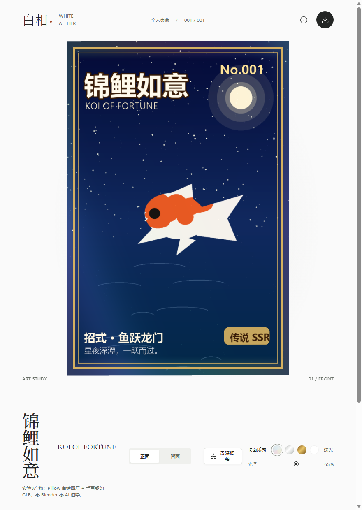
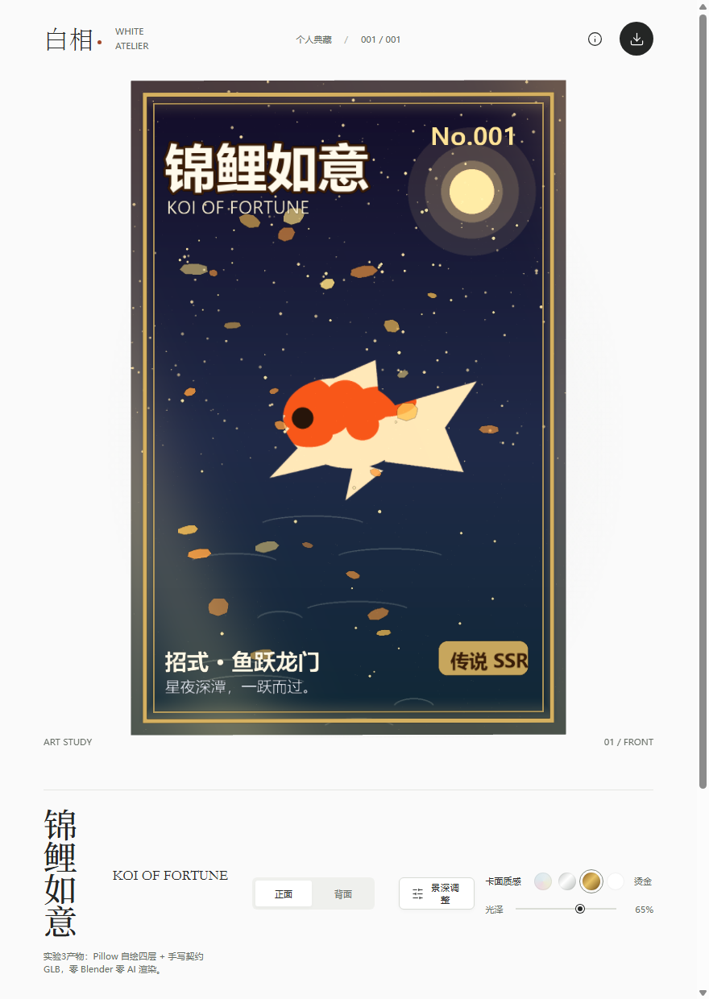

一句话：它是"私人闪卡印刷厂"——一条全自动生产线，输入一句话，输出一张能在浏览器里拖、转、翻、闪的 3D 全息卡网页 + 一个可编辑的 Blender 源工程。
小时候文具店门口那种"会闪的卡"，学名叫光栅卡（lenticular card）：卡片表面压了一排细密的凸透镜条纹，下面是两张以上从不同角度拍的画面。你歪头时，透镜把不同画面折射进眼睛——图就"动"了。这个 skill 用计算机复刻同一种体验：不压塑料条纹，而是用 3D 场景里前后错开的图层 + 跟着视角变色的全息材质，在屏幕上达到"歪头就闪"的效果。
仓库是 GitHub 用户 HRuiCcc 的 RuiC-card-skill（466★，MIT 许可），本体只有文字和脚本，装进任何能读 SKILL.md 的宿主就能用。
这是理解这类项目的第一道坎。这三个词各管一层：
| 角色 | 是什么 | 在这个项目里 |
|---|---|---|
| 模型 | 真正"动脑"的 AI（要多模态：能画图、也能看图） | 画四层图、打开渲染帧自查"对不对" |
| 宿主 | 跑模型的程序外壳，负责读指令、执行工具 | Claude Code / Codex 等，只要会读 SKILL.md |
| Skill | 写给模型看的操作手册 + 工具箱（纯文本+脚本） | SKILL.md 讲流程红线，scripts/ 是确定性工具 |
"不挑宿主"的秘密：skill 把"需要智力"的活全推给模型，把"需要精确"的活全写进脚本。画图、看图、改图——这些只有模型能干，所以换任何多模态模型都行；切尺寸、验透明、装 Blender、打包网页——这些一步都不能错，所以全部固化成 Python/Node 脚本，模型只负责"按手册调用"。这就是 [[AgentSkills技能包]] 的标准分工。
README 给的流程图浓缩成五步：分层画图 → 写配置 → 一键流水线 → 起网页 → 机器验收。
核心命令就三条：
最后交付五样：网页链接、card.blend 源工程、四层透明 PNG、card-config.json 配置、验收报告+渲染图。全待在你自己的项目目录里，skill 本身保持纯文本。
一张平面图永远是一张平面图。立体感的来源是"把一幅画拆成几层，每层放在离卡面不同远的地方"。skill 规定五层（特效层可选），每层一份文件、一个景深数字：
| 图层 | 职责 | 景深 | 要求 |
|---|---|---|---|
| 主体 subject | 人物/主角 | +0.4（前凸） | 真透明 RGBA |
| 特效 effects(可选) | 花瓣/火星 | +0.5 或负 | 真透明，浮在主体上、文字下 |
| 背景 background | 环境 | −0.25（后缩） | 完全不透明 |
| 线稿 lineart | 驱动"墨光"描边 | 跟随主体 | 白底深色线，必须与主体同源 |
| 文字 text | 卡框+排版 | 0（钉死） | 网页端不做视差，边框稳贴卡边 |
另一条反直觉规定：线稿不许让模型重新画一张，必须从主体同一批笔触（或对成品主体做边缘提取）派生——重新生成的姿势会漂移，发光描边就会长错地方。这和 [[角色一致性锚定]] 是同一个思想：一致性靠派生，不靠重抽。
网页 shader 里最核心的一行（Blender 端同一公式，系数略不同）：
逐块拆开：
| 片段 | 人话 |
|---|---|
| uView | 视线方向变换到卡片自己的坐标系——"你的头歪向哪边" |
| uView.xy / |uView.z| | 视线在卡面上的"偏移比例"；分母 max(·,0.4) 设下界，视线几乎平行卡面时不会除以接近 0 的数而爆炸 |
| × depth | 这一层的景深：带符号——正数往你身边凸，负数往卡里缩 |
| uv + … | 该层的贴图按视角整体平移：层越深，同一个转头让它挪得越多 |
SKILL.md 还补了一个非显然的坑：只做"UV 居中 + 法向变换"不够，必须把视线除以有界法向分量再当带符号景深偏移；而且 glTF 的 Y-up 转换会动 Blender 的本地轴，uView 必须在卡牌根坐标系里算，否则一个转向会拖花贴图或把视差反相——官方原话是"两个转向都要测"。
全息镭射的彩虹来自这条相位函数：
彩虹色 = spectrum(phase)（余弦调色板出粉→黄→蓝→白）。关键在后两项：相位里混进了视角分量。卡一转，uView 变，整张卡的彩虹"相位波"跟着移动——转到哪，闪到哪。
四种卡面质感（珠光/银箔/烫金/原画）共用这套膜，只调强度与配色："原画"档把强度归零，就是无镭射的原图。
因为 glTF（.glb）搬不动 Blender 的自定义节点图。Blender 里镭射、星光、墨光都是节点网络；导出 GLB 时只有几何体和材质"名字"过得去。于是项目发明了一个轻量契约：
网页端看到这些名字，就把自己用 GLSL 手写重建的同款材质按名字安上去。Blender 渲染图和浏览器画面"接近但非逐像素一致"——交付时 skill 要求明说这一点，不许吹"完全一致"。
这个思路和学过的 [[JSON-IR类型化中间表示]] 完全同构：把"传输带不动的复杂物"换成"双方约定的最小契约 + 各自重建"。
查看器有两道保险：
保险一：单文件打包。three.js、图标全部打进一个 app.bundle.js（约1.3MB）。为什么？流水线源码里写着血泪注释：以前拆成多个小模块请求，广告拦截插件会把 node_modules/…/fingerprint.js 这类 URL 误当追踪器杀掉，页面直接卡死在"正在装裱作品"。单文件无懈可击。
保险二：CSS-3D 兜底。用户浏览器关掉硬件加速（没有 WebGL）时，页面不白屏，改用纯 CSS 3D 变换堆出分层卡片：拖拽、翻面、镭射反光都还在，只是没有 shader 引擎。WebGL 可用但 shader 编译失败也会自动降级。
validate_assets.py 在进 Blender 之前拦四件事：
| 检查 | 规则 | 为什么 |
|---|---|---|
| 格式 | 必须是 PNG | 防 JPG 静默压掉 alpha |
| 同画布 | 五层尺寸一致且 ≥256px | 不同尺寸在 UV 公式里直接错位 |
| 真透明 | subject/text/effects 需有 alpha 通道，且既有透明像素也有实体像素 | 全透明或全实体的层都是废层 |
| 线稿 | 灰度最暗 <80 且最亮 >230 | 墨光靠线稿的深浅发光 |
"假透明"是个经典图像坑：不少图像工具没有真 alpha 通道时，会把透明区域画成灰白棋盘格存成普通 RGB——人眼看"好像透明了"，下游抠图直接废。项目给了确定性解药 checkerboard_to_alpha.py：在图像边框检测"两种主色构成的周期网格"（格子 8~64px），命中后逐像素按棋盘相位预测色还原 alpha，还带一个"邻居一致性"保护——就算角色白头发落在白格子上也不会被误抠。
verify_web.mjs（609行，纯 Node 零依赖）是全项目最"狠"的文件：它自己拉起无头 Chromium 系浏览器和本地服务，通过 DevTools 协议把页面当真人一样玩一遍——拖拽双转向、垂直倾斜、滚轮缩放、翻面、键盘、五个滑块、四种质感、截图下载、390px 手机窄屏、减动效偏好。
它的验收哲学：比对"真实画面帧"的哈希，而不是滑杆读数。每个滑块拨动前后各截一帧，帧哈希必须变——"读数变了画面没变"照样算失败。原话更绝："ready 旗标证明的是控件在，不是好看。"这是 [[证据优先质检ProofOverClaims]] 的标准实践。
整条官方流水线需要"多模态模型画四层图"+"下载便携版 Blender"。我全程没用这两样，纯 Pillow + 手写 GLB 也把卡做出来并过了官方全量验收——反过来证明了"材质名契约"是真实可依赖的公开接口，不是宣传语。
实现：主体与线稿共用同一套形状函数再同角度旋转，保证轮廓精确对位（Q4 的"同源派生"）。✅ 预期结果：输出 JSON 报告 subject RGBA 透明占比 90.05%、text 89.93%，无报错；四个坏图反例 3 个拦截 + 1 个盲区（反色线稿）。
实现：自制假透明图→检测周期网格→逐像素还原 alpha，与原始真 alpha 逐像素对账。✅ 预期结果：98.3% 像素完全一致，平均差 1.93/255。
实现：viewer 只认"几何+材质名"，所以几何可以是一块手写的 2:3 平面；卡面纹理全部由网页 shader 现场合成。✅ 预期结果：无头 Edge 两帧截图帧差 73.86（动画真在动）；官方验收 33/33 PASS。


能力清单（学完你能干什么）：
| 🐱 给猫做一张"传说 SSR"闪卡 | 上传照片一句话，猫前凸背景后缩 |
| 🎮 给独立游戏批量出货卡组 | 一个角色一句描述一张配置，流水线批产 |
| 🎁 做带翻面的节日纪念卡 | 背面写一句话，翻面瞬间闪光拉满 |
| 🔬 材质实验场 | card.blend 里镭射/星光/墨光节点独立可调，学"闪"的原理 |
| 🛠 契约式接自己的查看器 | 只卖"几何+材质名"，前端可整体替换（实验3已验证） |
知识网络里的位置：